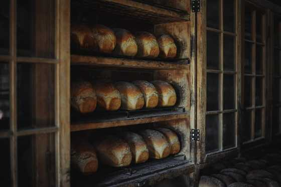
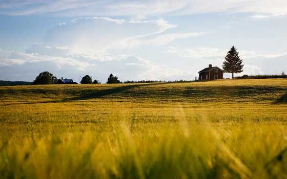
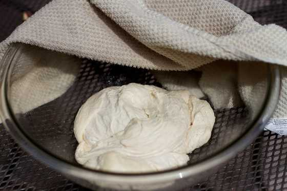
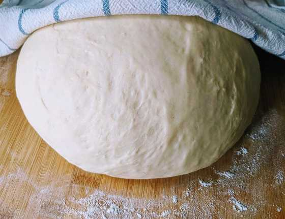
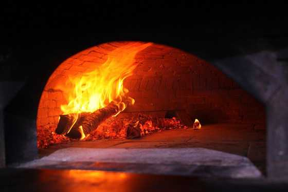
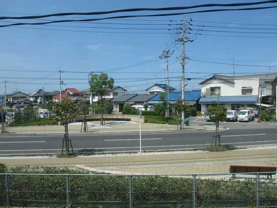
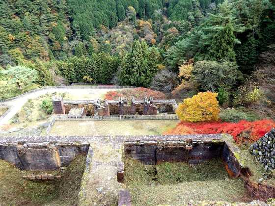
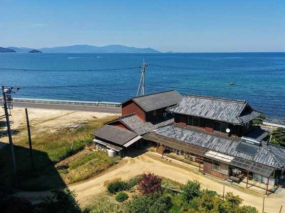

愛媛県新居浜市・上泉町の小さなパン工房
安心して食べられる、
もちもちのパンを。
国産小麦と国産もち麦をブレンドし、バターは使わずに。「安心・安全で美味しいパンを食べてほしい」という思いで焼く、山ちゃんパンのご案内です。
お店の想い
粉から選ぶ、安心のパン。
通販サイトの店舗紹介によると、山ちゃんパンは「皆さんに安心・安全で美味しいパンを食べていただければ」という思いで日々パンを作っている、食材にこだわった小さなパン工房です。
粉は、国産小麦・薄力粉・全粒粉またはライ麦粉・国産もち麦(キラリモチ)の4種類をブレンド。動物性油脂(バター)は使わず、オーガニックシュガーと、昔ながらの製法でミネラル分の多く残った塩を使っているとされています。もち麦の働きで、噛むほどにもちもちとした食感が楽しめます。
情報源: rebake 山ちゃんパン店舗ページ/Instagram @yamacyan_pan
上記の事実以外(見出しの言い回しなど)は制作側の表現です。店名の由来は確認できていないため記載していません。

パンができるまで
こね、ねかせ、火にかける。
写真は、パン作りの雰囲気を伝えるフリー素材です。お店の工房ではありません。



口コミ
お客様の声(イメージ例)
以下は制作側が作成したイメージ例で、実在のお客様の声ではありません。
噛むほどにもちもちで、食べ応えがあります。朝ごはんにぴったりです。
真っ黒な開運パンに驚きましたが、やさしい甘さでおいしかったです。
素材にこだわっているのが伝わって、家族にも安心して買えます。
アクセス
新居浜・創作地区のお店です。
| 所在地 | 愛媛県新居浜市上泉町8−5 |
|---|---|
| 電話 | 準備中 |
| 営業時間 | 準備中 |
| 定休日 | 準備中 |
| @yamacyan_pan |
営業時間・定休日は情報源により表記が異なるため掲載せず、「準備中」としています。最新情報はInstagramをご覧ください。


